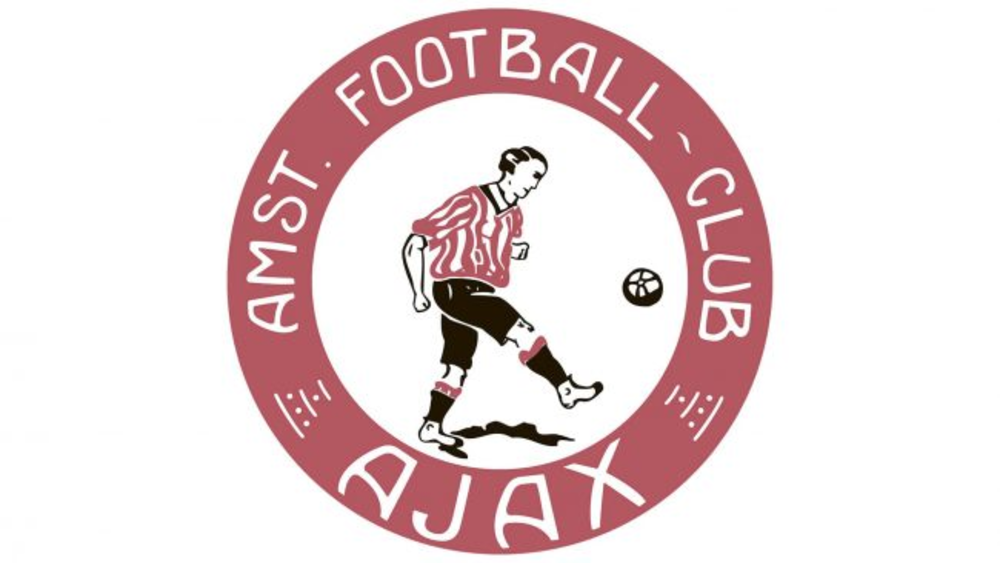
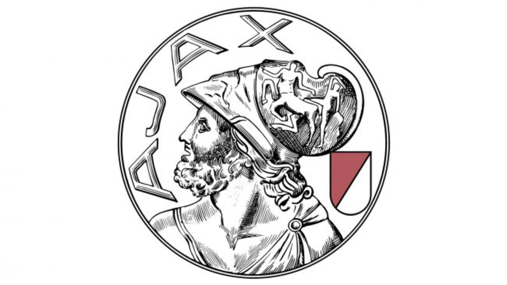
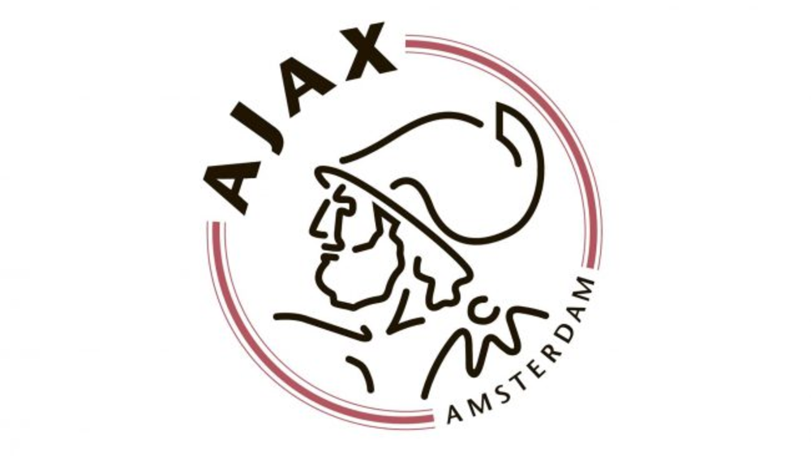

Página inicial
Sobre mim e meus times
Galeria de fotos usadas
Pagina para contato
Curiosidades do futebol
Escudos do Barcelona
Escudos do Ajax
Copa do Mundo de 2022
Evolução dos escudos do Ajax
E mais curiosidades sobre o clube
Instrumental do hino do Ajax ao fundo
Os áudios infelizmente não funcionaram
Escudo de 1911

Escudo de 1928

Escudo de 1991
